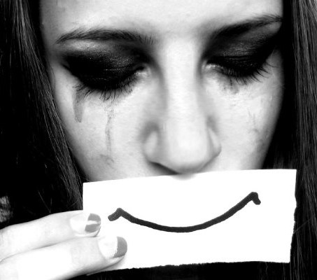
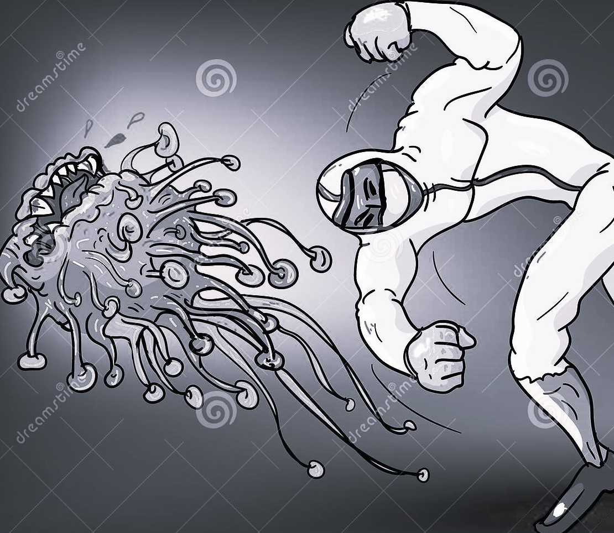
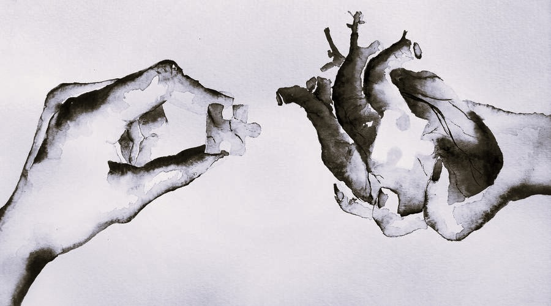
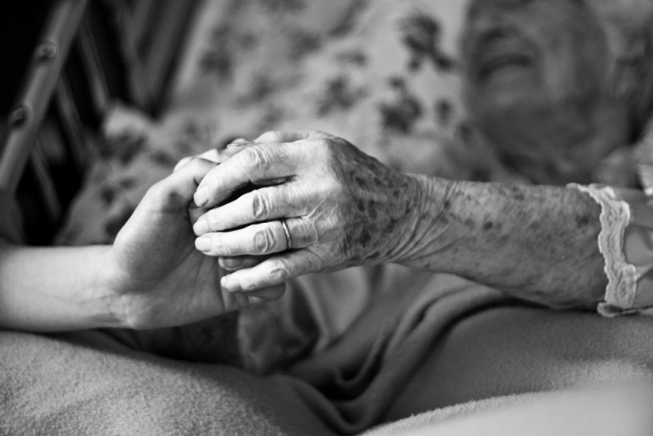
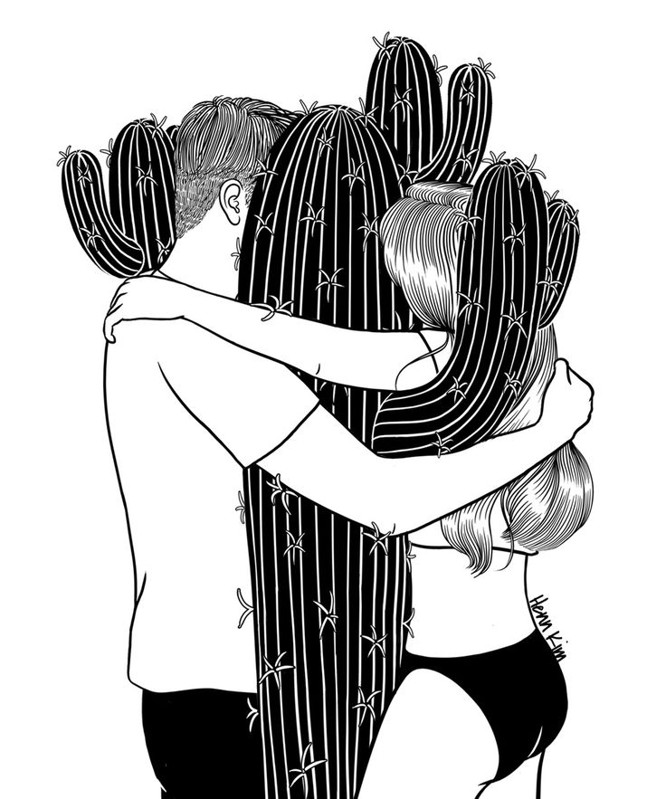

POEM
POEM
?????
Sameeksha Sauliwal
What to feel and how to feel?
When you don’t know what’s the deal.
Where to go and where to rest?
When you don’t know what’s the best.
What to learn and how to learn?
When you are told just to earn.
Where to find and what to find?
When you know this world isn’t so kind.
Whom to ask and how to ask?
When you know they all wear a mask.
Where to share and where to lie?
When you are told one day you’ll die.
What to do and how to do?
When telling the truth is difficult too.
Where to run and where to hide?
When there’s moat on either side.
Like
MOVE ON!
Sameeksha Sauliwal
Time flies, you sit under the sky
And watching it go, you just cry
You watch that moon and remember him
That why didn’t he even give it a try
There you forget to notice those stars
Who could have helped your scars to dry
You think every word he said to you
And calculate how much of it was a lie
You forget to appreciate happy times
And never told him a healthy goodbye
You put up big barriers in front of you
And pretend that you need no guy
Somewhere you want to strongly believe
Forever isn’t always a lie
You want to believe that a guy will come
And Things will change with just his hii
You’ll want to believe that love isn’t bad
When you’ll think if he should get a reply
You’ll want to believe he’ll stay by your side
Even in bad state you’ll deny
Maybe you’ll compare him to your ex
And think what if you retry
But you couldn’t and should not go back
To live what was just a lie
You have to open up and let people in
As it will be time to get up and fly!!
You must believe love was not that failed
So, you must not give up and just try!
Like
Life!?
Sameeksha Sauliwal
There was a time where we had no teeth,
With no fear, we have to earn to eat!
There was a time where r hands were legs
With no thought, money makes them beg
People wanted to see us laugh and smile
Now can’t see r happy faces for a while!
I remember my elders offering me gift
Now what I see isn’t a quarrel but a rift
Once, there were friends all around
Assuming that friendship has no bounds
Now what I see r a few people together
Who change themselves just like a weather
There was a time when no one betrayed
All the hidden grudges used to slowly fade
Now people just separate their ways
How easily they move on, I often amaze
Life was life then, now it’s just a ride
All what a person need is his own pride
Feelings of others r no more important
Now change has become d only constant
Like
Hey, Please!
Sameeksha Sauliwal
Hey, please don’t you love,
Just love is not enough!
Hey, please don’t you care,
True bond is now so rare.
Hey, please don’t you cry,
Let your old scars dry!
Hey, please don’t you fight,
Even if you are always right!
Hey, please don’t you wait,
Try to believe on your fate!
Hey, please don’t you plead,
Try not to make them need!
Hey, please don’t you move,
Let your mistakes improve.
I repeat, please don’t you love!
Just love will never be enough!
Like
What did i want?
Sameeksha Sauliwal
What did i exactly expect?
I just wanted to be heard.
I just wanted to be loved.
I just wanted a new world.
What did i really ask for?
I just wanted some attention.
I just wanted to be the one.
I just wanted to be the exception.
What did I crave for?
I just wanted to be noticed.
I just wanted to be kissed.
I just wanted to be treated like a gift
What did i really pray for?
I just wanted to be that smile.
I just wanted to his reason.
I just wanted to be loved for a while.
I just wanted to be loved for a while.
Like
A little Girl
Sameeksha Sauliwal
There lives a little girl,
Embroiled with problems in her world!
She has lost, now she is lost!
Her childhood now seems so whirled!
She smiles and convince everyone,
Make them sure she is full of life!
Inside, she dies like thousand times,
When she is treated like a rife!
The one who valued her is gone,
She pretends she is okay and fine,
Without him, she feels like a lost child,
Her dad was the one who brought all shine!
She just want a peaceful night,
Give her pain all day, it’s alright!
Yes, she can bear all the storms with a smile
But please don’t always make her cry or hide!
Like
They say,
Sameeksha Sauliwal
They say I am mean!
They say I have no dream!
what they don’t know is,
In darkness, I sometimes scream!!
They say my heart is a stone,
They say am hard like a bone
What they don’t know is
There’s a child dying while am grown.
They say I don’t care,
They say I live in air.
What they don’t know is
Besides a listener, I am a Sayer.
They say I lie,
They say I don’t cry.
What they don’t realise is,
In somebody’s love, I daily die!
Like
He's a fighter!
Sameeksha Sauliwal
His throat might be drying,
His hopes might be crying.
In his bed, he might be lying,
To fight it, he might be trying.
His chest might be bursting,
His head might be hurting.
His dreams might be reversing,
His thoughts might be cursing.
Yes, he might be feeling alone,
His childish part might be grown.
His legs might be hurting like stone,
He might want support of any known!
But he smiles and assures everyone,
He says that life is normal and fun.
He stays best as brother and a son,
Although he goes through pain of tons.
He’ll soon be fine and be here,
Where all his dear ones would be near.
Yaa, there’s a lot of pain he bears,
But I know he’ll soon defeat all the fears!
Like
I was happy,
Sameeksha Sauliwal
I was happy, I bet he was too!
I loved him once, surely, he did too,
But see how quickly things change,
Now he is angry, I have my rage too...
He meant world, I was his too,
When I laughed, he smiled too.
But now we walk on different paths,
He was a mistake, I was a lesson too.
I was childish, sometimes he was too,
When I used to irritate, he annoyed too.
But now no one withstand our stupidness,
I miss him, maybe he does too.
He was not bad, maybe I wasn’t too.
Just, I wasn’t for him, he might wasn’t too,
Am very happy that we crossed our paths,
But am happy like this, surely, he is too!
Like
Yes, she cares
Sameeksha Sauliwal
Yes, she cares, just doesn’t show,
How she changed, she doesn’t know!
Now she keeps her respect aside,
Though she once had her ego!!
Yes, she notices but stay quiet,
Last thing she wants is to fight!
But there, she hurts herself,
And loses even if she’s right!
To forget said words, she tries
She wants that her scar dries
She isn’t grown yet, she knows
being a child, yes, she cries!
Yes, she loves, but she denies
Yes, she gets hurt, but she lies
She hides behind a smile
BCoz, she hates saying Goodbyes!
Like
Is it just me?
Sameeksha Sauliwal
Is it me or love really hurts?
I wanted peace, it felt like curse.
It’s not that every second was pain,
But some seconds were really worse.
I stopped myself to love again,
I knew that would give me pain.
But yes, sometimes I just wish
Someone to dance with me in rain!
I found excuses to hold myself,
I knew nobody could ever help,
But sometimes I think what if,
Someone can calm me when I yelp!
I always tried to think this way,
“From love, far away you stay.”
But there are times where I want,
Someone to listen what I say.
Like
Her nightmares
Sameeksha Sauliwal>
There was a day with endless rain,
Night filled with excruciating pain.
It wasn’t a dream but a metaphor,
Filled with fears of one insane.
She felt boiling blood in her veins,
She knew there was fret in her brain.
She could see him there, lying lifeless,
But, tries to save him were going in vain.
Her life then turned to a moving train,
A train that can’t choose a single lane.
She saw close people in her life go,
She had no thoughts, that help her sustain.
She fought herself, she tried to refrain,
She tried to find her happiness again.
Yes, surely she found reasons to do so,
But u know, it’s difficult to remove some stains.
These nightmares come with no constrains,
She fears but fights them without complain.
She does try hard to forget dreadful past,
But there’s a part of guilt, that always remain.
Maybe someday peace her heart will attain,
Someday strengths her dreams will regain,
Maybe someday she’ll wake up with a smile,
And share it with someone with a glass of champagne!
Like
And he moved on!
Sameeksha Sauliwal
Because of him I knew,
What love really was.
Now,he’s teachin’ some1 else,
What it can do or cause!
I am happy that he moves on,
He finally will be heard!
Maybe I wasn’t good enough,
All those promises r now dirt!
I hear people asking me,
Why is it bothering me?
I want someone to say,
It’s ok to let your tears free.
I know I don’t love him now,
But our love still taunts me.
How much I try to move on,
Some of his actions still haunts me.
Everything feels so messed up,
I wish I never knew what love is.
I wish that I now realise,
Everything fuckin’ love does this!!
Like
To his girlfriend
Sameeksha Sauliwal
I remember he told me once,
He won’t love as it gave pain.
But I think you’re so special,
That he now believes in it again!
I thought he’ll come back one day,
And give all reasons to move away.
There must be something about you,
That now with love, he’s okay!
I thought he’ll be stuck like me,
Maybe he wouldn’t also try.
But m sure u came with light,
N helped his all scars dry!
I never thought he’ll return to say,
He is finally into someone.
You must be too important to him,
Afterall, his heart, at once, you won!
I thought I’ll be devastated,
And never thought I would say.
I’m happy he’s happy with you,
N you’re both happy at d end of day!
Like
I loved, agian!
Sameeksha Sauliwal
I actually waited for him,
From sun’s first ray, till the lights turned dim.
I actually hoped he’ll love too,
N stand by my side through my thick n thin!
I remember the day we met,
I felt butterflies hopping in my heart!
There was a spark in my eyes,
But I knew it’ll end before it starts.
We were irreparably broken,
The last thing we wished was to love again.
I had to pretend to shut my love,
His smile was enough, though I lived in pain.
I just wish to see him happy,
I wish, to his miseries, I could be cure!
I wish he realises someday soon,
What I feel for him is real and sure.
Like